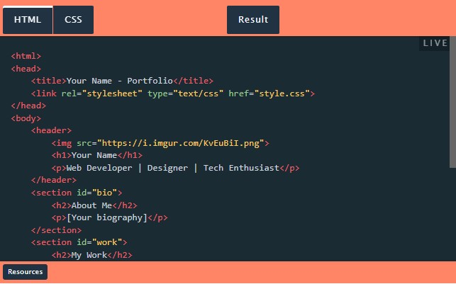

One of the best ways to start your HTML journey is by creating a personal portfolio page. This project allows you to introduce yourself to the world of web development while learning the basics of HTML. It’s not just about coding; it’s about telling your story through the web.
The objective here is to craft a web page that effectively portrays your personal and professional persona. This includes detailing your biography, showcasing your skills, and possibly even including a portfolio of work or projects you've completed. This page will be a cornerstone in establishing your online presence and can evolve as you progress in your career.
